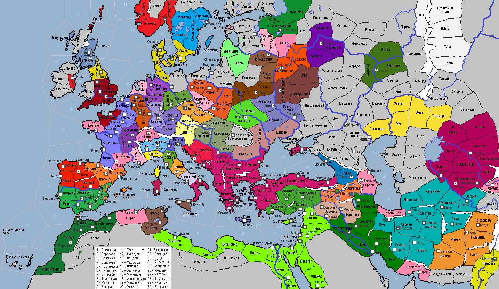

<== | 1 | | 2 | | 3 | | 4 | | 5 | | 6 | | 7 | | 8 | | 9 | | 10 | | 11 | | 12 | | 13 | ==>
Заготовка сена
С XI века в практику животноводства вошла заготовка сена для круглогодичного содержания домашних животных [+1 к пр-ву Скот/двора]
· В 1005 году умирает король Дании Харальд Синезубый, по причине занятости при жизни, забывший оставить завещание. В королевстве установилось междуцарствие с борьбой двух сыновей покойного монарха за власть. В г.Роскилле обосновалась диаспора евреев. · Король Англии Этельмер I умирает… В борьбе за власть побеждает партия младшего сына покойного короля, возведя на трон сына Этельмера. · Войска Арагона захватывают г.Мурсия. · Венецианские торговцы завезли с столицу из Византии неизвестную болезнь, от которой погибает 50 тыс. чел… · Король Франции Гуго II становится сюзереном Бургундии. · Византийская империя решает уничтожить оплот альтернативного апостольского христианства Армении, заключает союз с тюрками Рума и, при поддержке войск вассальной Грузии, объявляет войну армянскому гос-ву. Войска грузинского князя Георгия I вторгаются в провинцию Армения и захватывают столицу – г.Двин. · Золта III продолжил правление династии Арпад в венгерском королевстве. · Бавария и Австрия заключают военный союз. · Войска Кордовского халифата освобождают провинцию Лейрия. · Нападению на Армению предшествовало затмение Солнца… «Беда идёт.» - говорили старцы и они не ошиблись. · Султан Али II Буид умирает от сердечного удара. Одна из жен покойного султана, желая привести на трон своего сына, уничтожает завещание, что приводит к династическому кризису в стране. Начались волнения. Сунниты стали требовать передачи власти старшему сыну Русбахану, исмаилиты желали у руля страны младшего сына – Ильяса, шииты хотели просто развалить государство. · Византийский император Исаак II Ангел всё никак не мог получить наследника… По двору стали распространять порочащие императора слухи о его немощности. Болезнь, которую завезли домой византийские купцы, меж тем проявила себя в Македонии, г.Афины и Трапезунде. Бежавшие под напором венгров печенеги и бросившие хана на произвол судьбы, нападают на Крым и разоряют его. · Полоцкое княжество и Литва заключают оборонительный союз. · Сейм избирает императором СРИ архиепископа Вестфалии Готтфрида I. Однако, местные бароны поднимают мятеж, не довольные тем, что «слуга Бога» занимается делами мирскими. Мятежная армия захватывает г.Кёльн. · Император Готтфрид I провозглашает принятие закона о Земском Мире в землях СРИ: «Братия мои германские и итальянские, исповедующие истинную веру католицизма! Нас окружают опасные волки, выжидающие подходящего момента для того, чтобы растерзать нас в клочья. Мы не должны поддаваться этим змиям искусителям, не должны братия вести войска друг на друга. С сегодняшнего дня мы будем едины в военном плане, будем помогать друг другу в час беды, будем обращать «тёмных» соседей обратно на путь истинный. Deus Vult! Ave Gottfrid!» · С целью защиты Саксонии император ведёт войска против напавших на неё славян, но … терпит там обидное поражение. На размокшем под дождём холме лошадь императора ломает ногу, сбросив седока. Император Готтфрид I попадает в плен к славянам. · Вслед за недавним набегом половцев в Туран вторгаются дикие кыпчаки, неся ужас разорений. · Вслед за Данией евреи перебираются и в г.Осло. · Литовцы совершают поход в Ливонию, где разбивают войско дикарей-ливов. · Великий князь киевский Святослав II созвал совет, на котором объявил о походе против печенегов. Не все подданные поддержали князя, напомнив ему какой ценой был достигнут прежний мир с кочевниками. Перепалка, однако, не нарушила решимость Святослава II, который в 1005 году наносит удар по Едисану, где разбивает остатки войск печенегов. · Огузы Рума наносят поражение войскам армянского царя Гагика III под Эрзурумом и захватывают провинцию с городом. · На смену умершему князю Олегу I Туровскому приходит его малолетний сын Святополк. · Имам Язид, появившийся при дворе фатимидского султана Альбассина I, убеждает его отказаться от шиизма и принять суннизм. Язида после этого забивают камнями до смерти разъяренные фанатики-шииты. · Кочевники, в прошлом беспокоившие границы Черниговского княжества, в этот раз решили нанести удар по Суздальским землям. Однако, в Мещерских болотах, дружина князя Святополка II наносит поражение непрошенным гостям. · Атенольф Ландольфид – новый граф Беневенто. · Войска шотландского герцога Майла-Колума I проигрывают сражение горцам Хайленда при попытке захвата этих территорий. · Польский король Мешко III Старый оставляет этот мир. Трон переходит к Одону Пясту. · Альморавиды при малике Салих-шахе испытывают культурный и экономический подъем: в стране освоили выпуск бумаги и начали производство ковров. · Вратислав I Благоразумный принял управление Богемией в свои руки и первым решением снёс церковь, у стен которой был захоронен его отец.